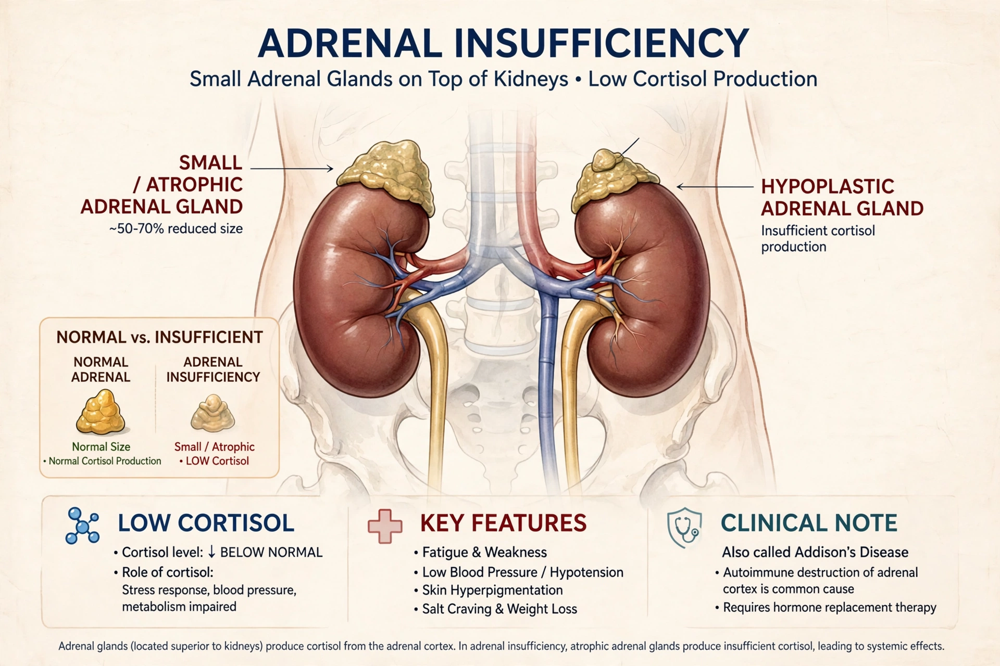

Adrenal insufficiency is a condition in which the adrenal glands do not produce adequate amounts of steroid hormones, primarily cortisol. Primary insufficiency, caused by disease of the glands themselves, is Addison's disease; secondary insufficiency results from lack of pituitary ACTH, and tertiary from hypothalamic dysfunction.

The commonest cause of secondary/tertiary insufficiency is prolonged glucocorticoid therapy such as prednisone suppressing the hypothalamic–pituitary–adrenal axis; stopping suddenly can precipitate crisis.
Morning cortisol and the ACTH stimulation (Synacthen) test are used, with ACTH levels distinguishing primary from central causes.
Insufficiency is the opposite state to cortisol excess in Cushing's syndrome.